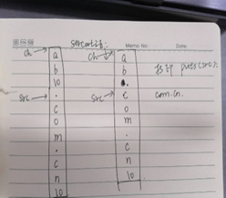

数组越界问题：
1、课程例题strcat之后.com.cn没有点.输出
#include <stdio.h>
#include <string.h>
int main(int argc, const char *argv[])
{
char ch[] = {'a','b','\0'};
char src[] = ".com.cn";
strcat(ch, src);
puts(src);
puts(ch);
return 0;
}
运行结果:
linux@linux:~$ gcc strcat.c
linux@linux:~$ ./a.out
com.cn
ab.com.cn
问题描述：
为什么打印出来的src没有点.
问题解决：

反正数组ch大小没设定肯定是错的，数组越界编译器不报错；
数组越界：
所谓的数组越界，简单地讲就是指数组下标变量的取值超过了初始定义时的大小，导致对数组元素的访问出现在数组的范围之外，这类错误也是 C 语言程序中最常见的错误之一。
在 C 语言中，数组必须是静态的。换而言之，数组的大小必须在程序运行前就确定下来。由于 C 语言并不具有类似 Java 等语言中现有的静态分析工具的功能，可以对程序中数组下标取值范围进行严格检查，一旦发现数组上溢或下溢，都会因抛出异常而终止程序。也就是说，C 语言并不检验数组边界，数组的两端都有可能越界，从而使其他变量的数据甚至程序代码被破坏。
因此，数组下标的取值范围只能预先推断一个值来确定数组的维数，而检验数组的边界是程序员的职责。
一般情况下，数组的越界错误主要包括两种：数组下标取值越界与指向数组的指针的指向范围越界。
2、字符数组’\0’的相关问题：
问题描述:
#include <stdio.h>
int main(int argc, const char *argv[])
{
char arr1[] = {'a','b','c','d'};
char arr2[] = {'a','b','c','d','e','f'};
printf("%s\n",arr1);
printf("%s\n",arr2);
return 0;
}
运行结果:
linux@linux:~ $ gcc test.c
linux@linux:~ $ ./a.out
abcdabcdef
abcdef
问题解决：加\0的问题
//字符串输出
//碰到\0结束
char str[5] = {'h','e','l','l','o'};
//对于大括号中的字符个数和数组长度相同，系统不会自动添加'\0'
一般要char str[6] = {'h','e','l','l','o'，‘\0’};
//字符数组不会有结尾标志，字符串型会默认补上
char a[] = "success!"; //这句后面就有'\0';
char a[] = {'s','u','c','c','e','s','s','!'}; //这句后面就不会有'\0'